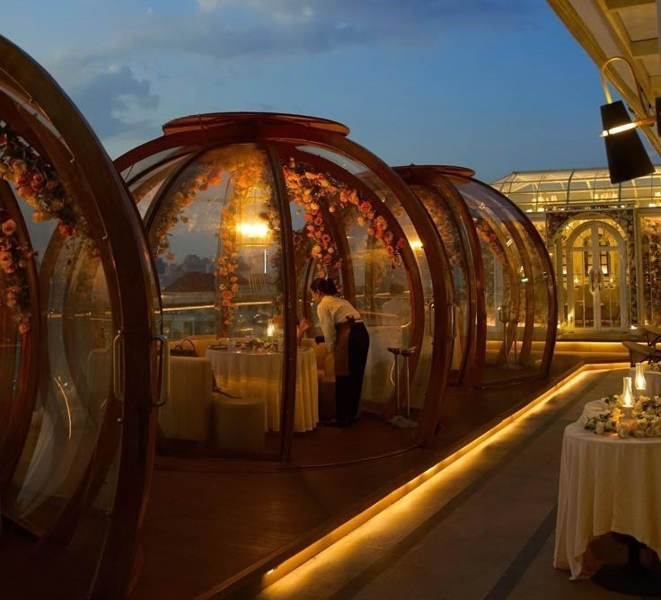
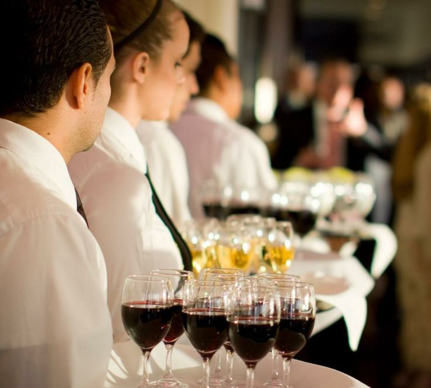

Un restaurante de lujo se distingue principalmente por su
propuesta gastronómica, basada en la alta cocina o en creaciones
de autor. Los platos son diseñados por chefs de renombre, muchos
de ellos con reconocimiento internacional o estrellas Michelin,
y se elaboran con técnicas sofisticadas y productos de la más
alta calidad. Los ingredientes suelen ser frescos, de temporada
y, en muchos casos, importados o exclusivos, lo que garantiza
sabores excepcionales y presentaciones artísticas.

Ambiente y Experiencia
El entorno físico es otro aspecto fundamental. La decoración de
un restaurante de lujo está cuidadosamente pensada, con
mobiliario de diseño, obras de arte, iluminación ambiental y
materiales de alta gama. Todo esto crea una atmósfera
sofisticada, elegante y acogedora. Algunos restaurantes también
cuentan con vistas privilegiadas, como terrazas con panorámica
urbana, ubicaciones frente al mar o en edificios históricos, lo
que realza aún más la experiencia.

Atención y Servicio
El servicio en el restaurante es altamente profesional, discreto
y personalizado. Los meseros están formados en protocolo,
etiqueta y en muchos casos dominan varios idiomas, lo que
permite atender tanto a clientes locales como internacionales.
La atención se basa en anticipar las necesidades del cliente,
garantizando comodidad y satisfacción sin ser invasivos. Cada
detalle está cuidadosamente controlado para ofrecer una atención
impecable.